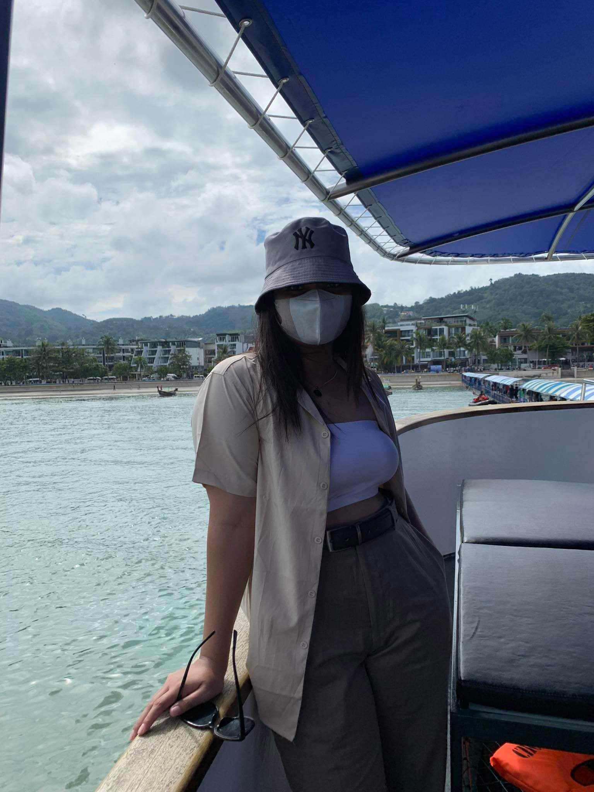

About Me
I'm presently obtaining a degree in information technology with a cybersecurity concentration. I have a strong desire to protect digital spaces and reduce dangers, thus I'm committed to studying and using the most recent cybersecurity strategies. In order to protect the confidentiality and integrity of digital assets, I like learning about new technologies and finding solutions to challenging issues. In addition to pursuing my academic goals, I am passionate about advancing the cybersecurity community and improving global digital security.